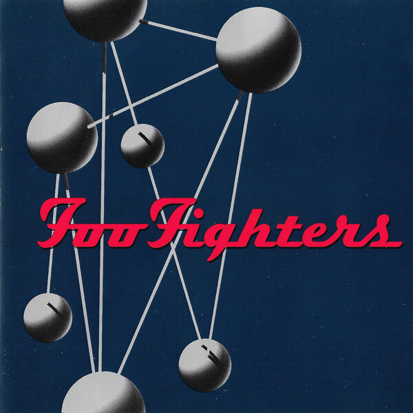
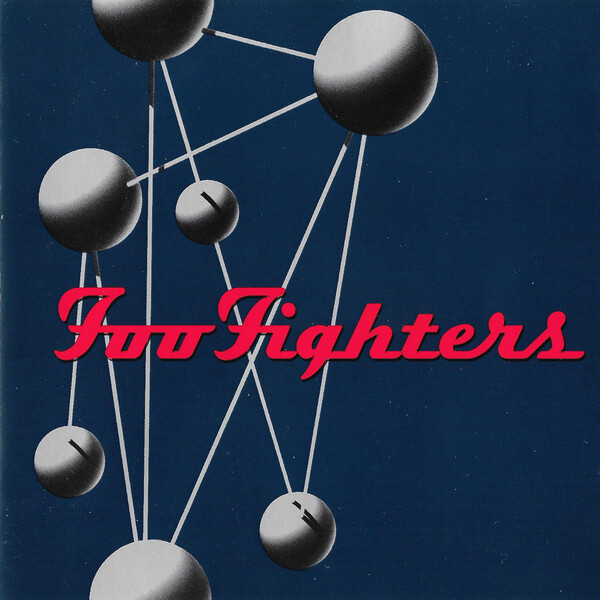

Week Five was a mix of Trippy hopecore, Experimental hip hop modern r&b, Pop rock millennial, Laurel canyon 60s-70s, and Electric guitar night drive. Below are the top artists from this week’s lineup. For me this week I needed a sense of comfort, so naturally I leaned towards listening to.


 
